数字筑基 · 智改赋能 · 数据驱动 · 智能决策
集团以“数字筑基、智改赋能、数据驱动、智能决策”为核心路径，以“平台 + AI 助手”双轮驱动，构建全域数智化体系。体系由四大板块构成：ECMS 为经营管控中枢，易模通 为 BIM 数字载体，智慧造价 为 AI 算力支撑，智能设备 为前端感知网络。
四大板块横向覆盖经营、项目全生命周期、施工现场三个层面，纵向贯通“数据采集—智能分析—闭环处置—数字归档”全链路，形成项目质量、安全、进度、投资全流程智能闭环管控能力，并按智慧工地标准实现信息管理、人员管理、视频管理、安全管理、质量管理、绿色文明施工、物料与进度管理、BIM 应用管理八大模块全覆盖。
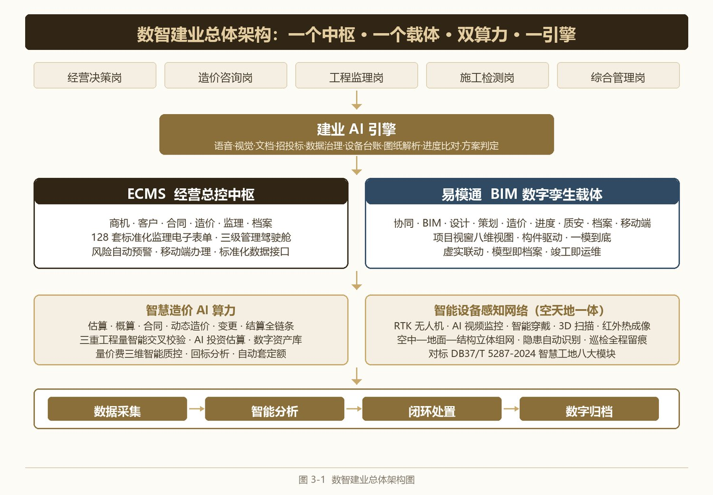
以“数字筑基、智改赋能、数据驱动、智能决策”为核心路径，构建四大数智化板块。
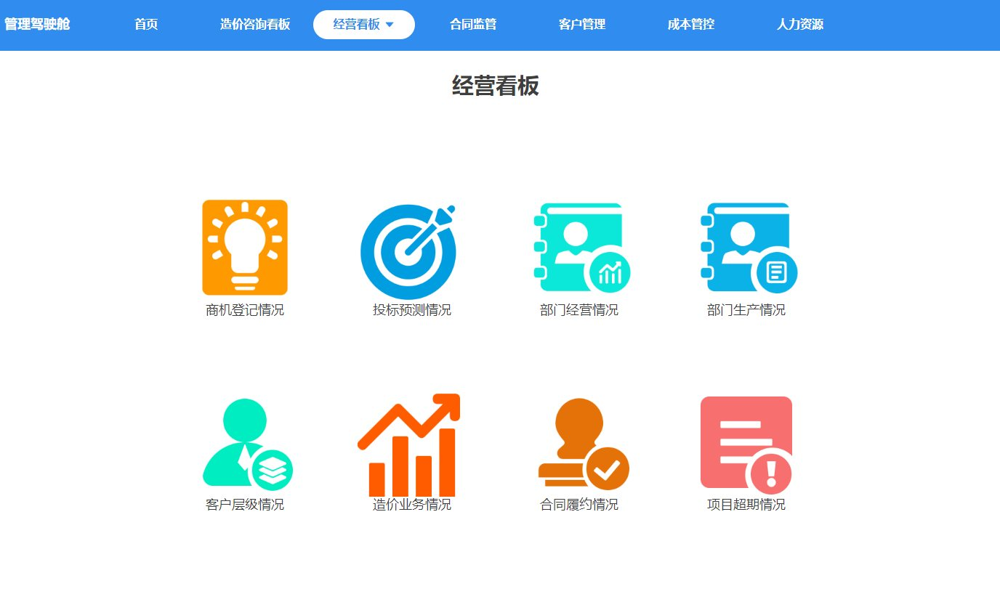
全域管控底座覆盖全产业链业务，搭载智能台账、履约风险筛查、资料合规校验等 AI 核心引擎，建立集团、分公司、项目三级数字孪生驾驶舱。以低代码技术为底座，贯通商机、投标、合同、业务、财务、档案、行政、人事全管理链条，内置 128 套标准化监理电子表单。
进入系统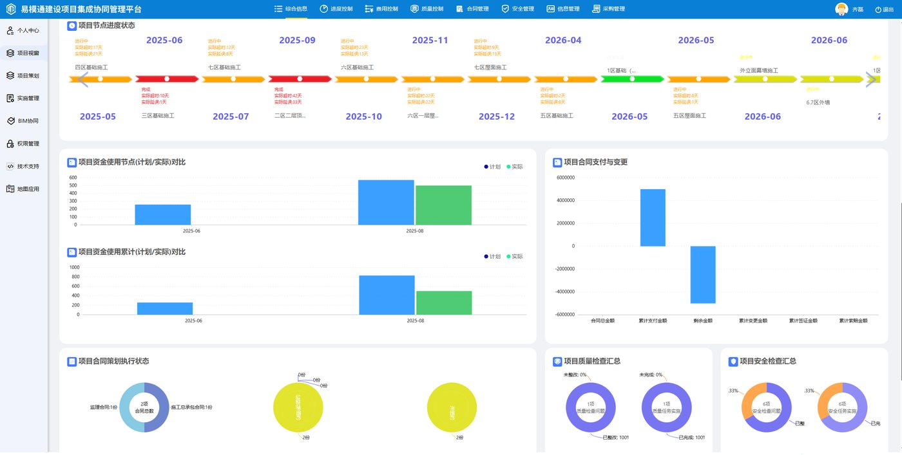
BIM 协同与广州易达科技联合共建、深度定制的国产 BIM 协同平台，以模型为数据载体贯通项目全过程管控，覆盖协同管理、BIM 应用、设计管理、策划管理、造价管控、进度管控、质量安全管控、档案信息管理九大业务模块，提供八维管理视图。
进入系统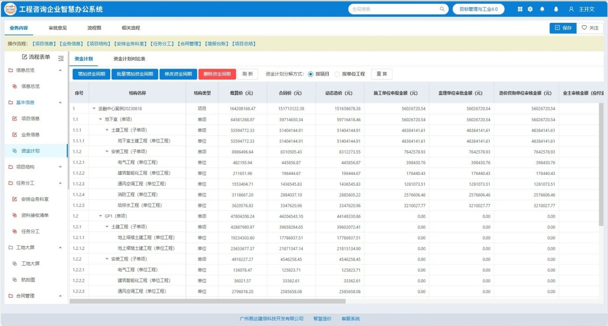
调用私有化多模态大模型算力，具备 AI 智能查询、投资估算、智能质控、回标分析与三重工程量交叉校验能力，沉淀企业专属造价数字资产库。
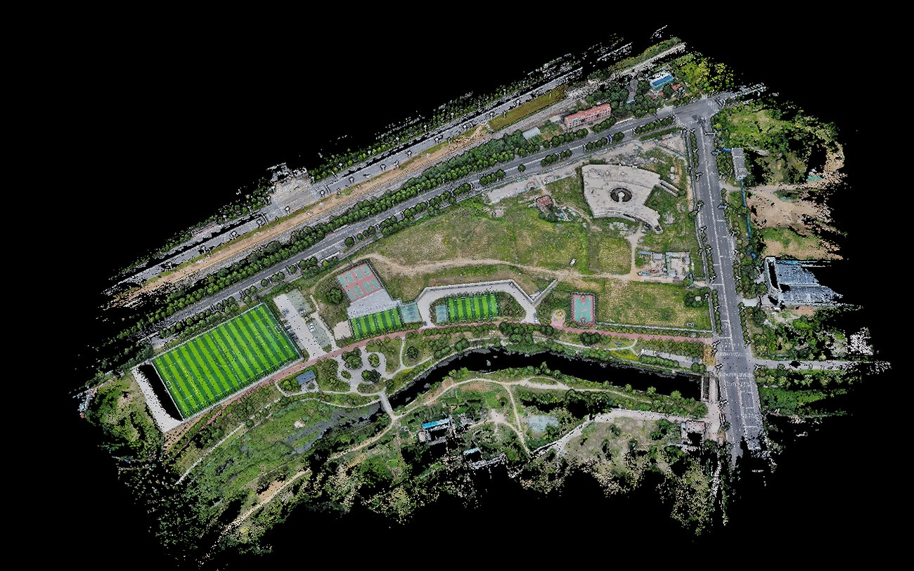
智能无人机构建空天地一体化感知网络，实现红外热成像无损病害检测、高危区域自主巡检与施工现场 AI 智能安防识别。
按智慧工地标准实现信息管理、人员管理、视频管理、安全管理、质量管理、绿色文明施工、物料与进度管理、BIM 应用管理八大模块全覆盖，现场安全与进度态势一屏掌控、留痕可溯。
集团数智化产品统一以「建业·」为品牌前缀：门户侧服务入口为 建业·云服，移动侧员工服务为 建业通，文化内容窗口为 建业·视界。ECMS 与易模通作为建业·云服旗下的核心系统，保留独立登录入口，便于项目一线直接进入。
从政策标准、痛点识别到平台矩阵、AI 场景与实施路线，一组图看清数智建业的全貌。
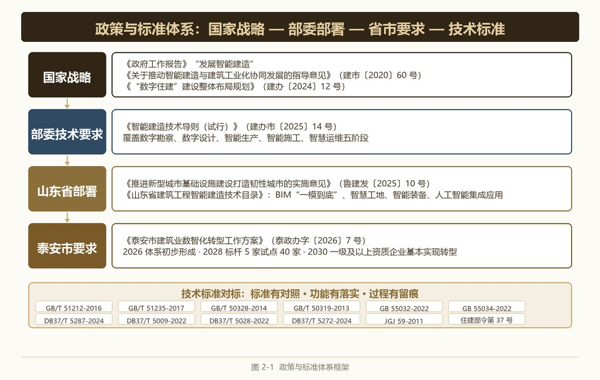
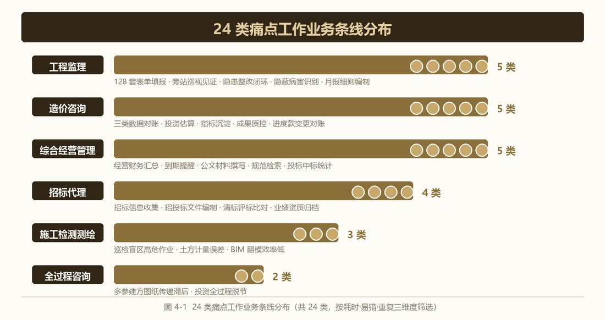
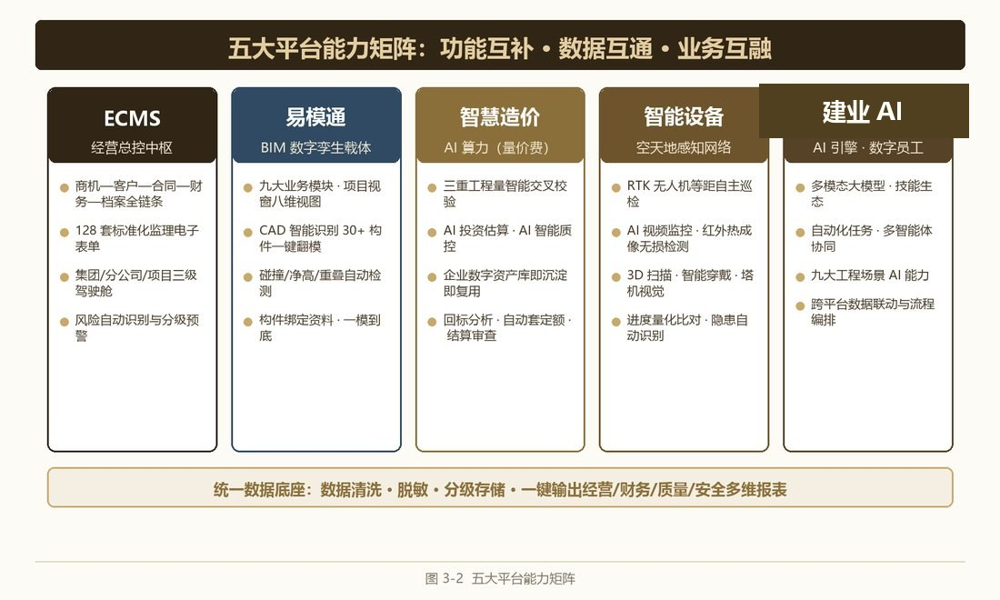
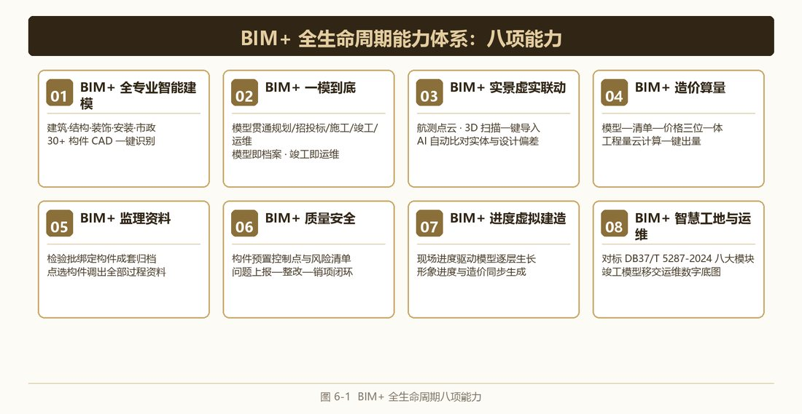
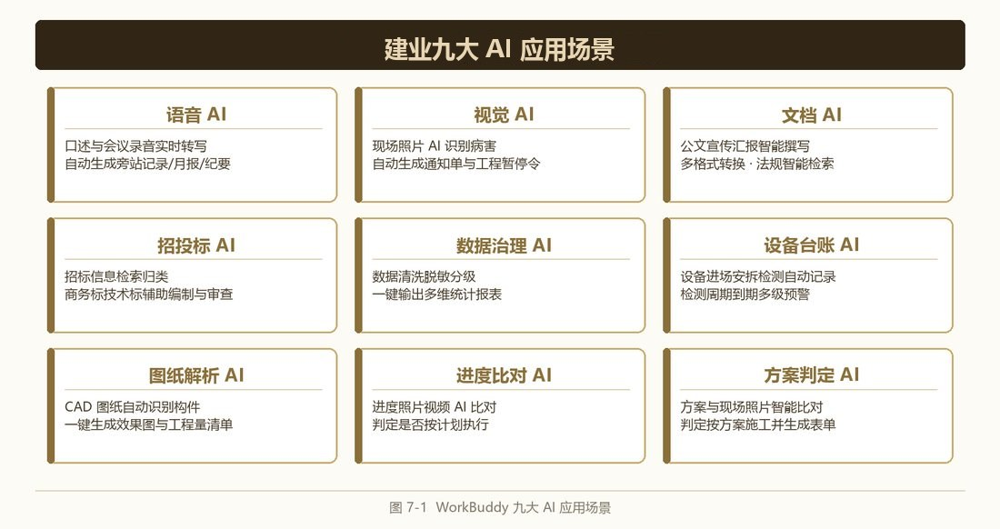
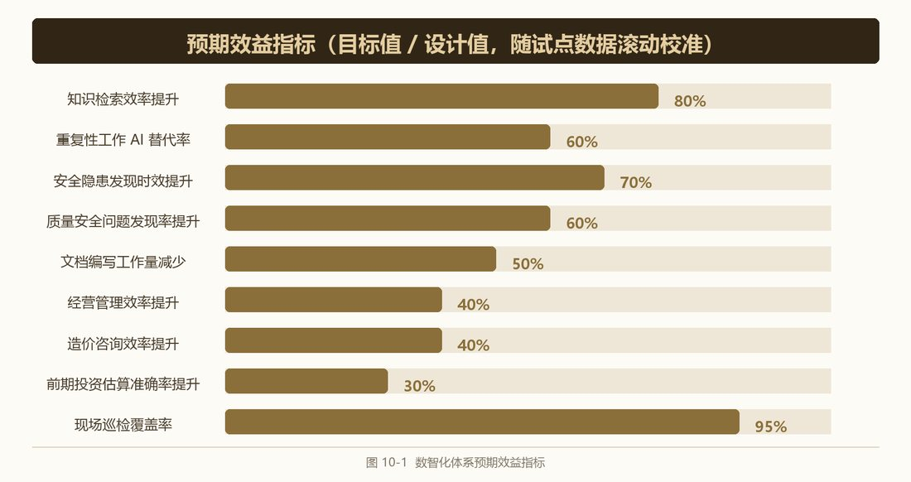
以下界面均来自集团在运行系统，核心数据已作脱敏处理。
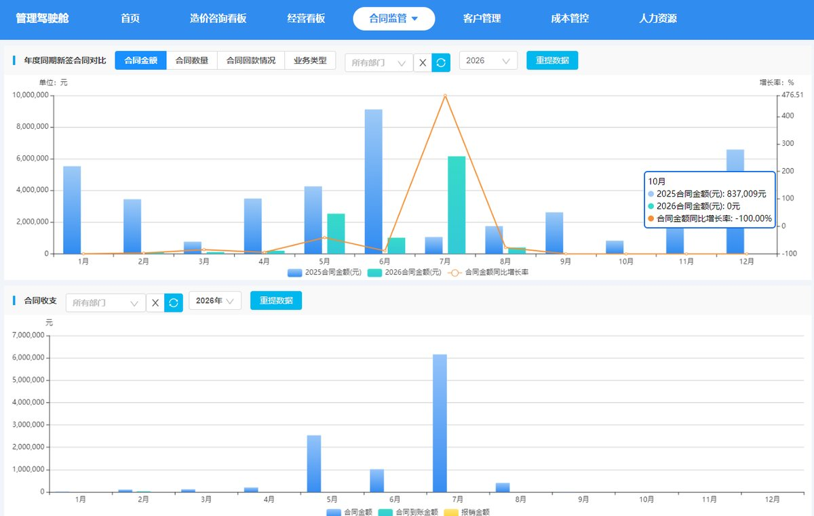
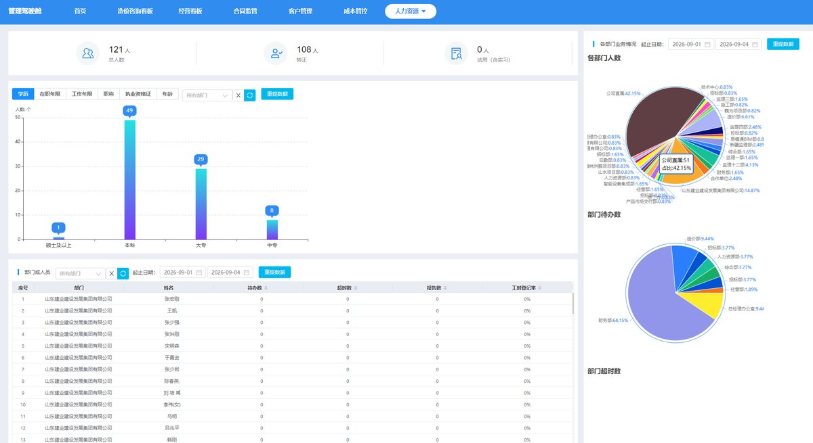
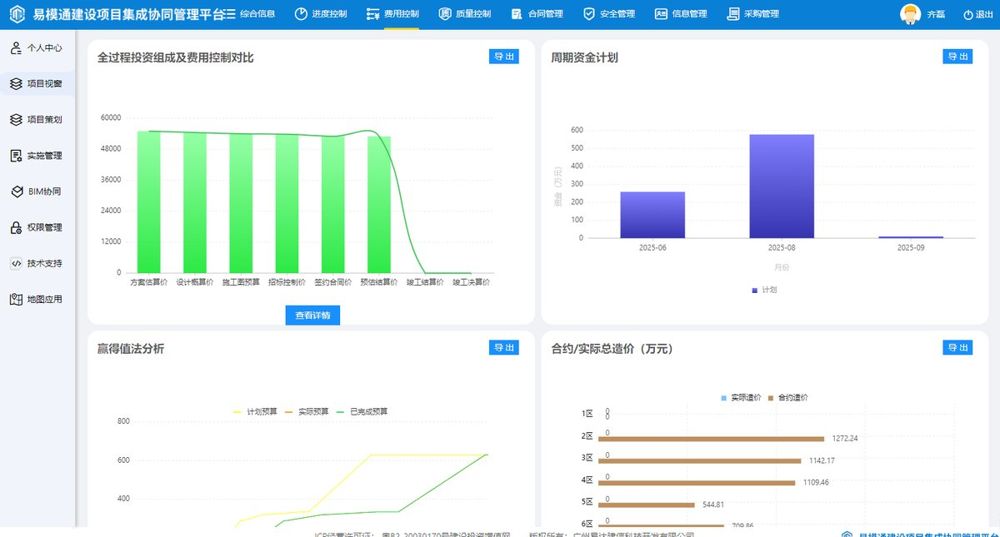
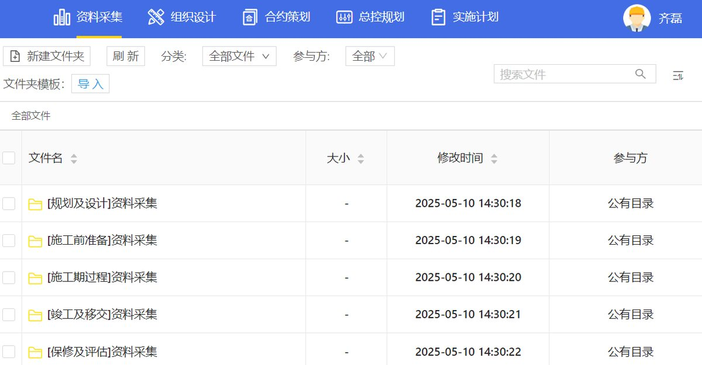
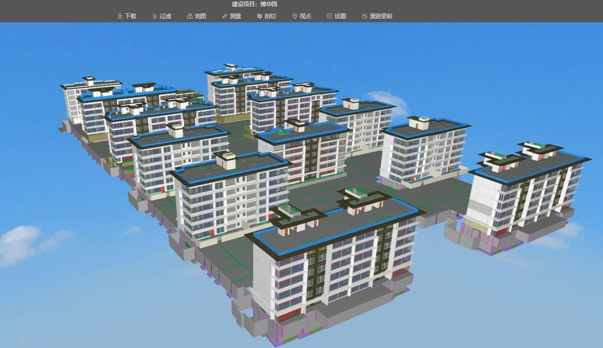
公司正按照“试点示范—全域推广—深度融合”三步走路径持续推进转型落地，全力配合行业主管部门数字化监管、工程档案标准化、安全生产常态化各项工作，打造区域全过程工程咨询智能建造示范样板。
从“建模看外观”到“一模到底、构件驱动、虚实联动”。
建模覆盖建筑、结构、装饰、安装、室外工程、景观、市政道路与管网等全专业；CAD 智能识别对柱、剪力墙、梁、板钢筋、砌体、门窗、基础、桩、承台及管道、设备、桥架、喷淋、地暖盘管、配电箱、回路等 30 余项构件一键识别，实现“图纸进、模型出”，多专业模型自动合并、碰撞与净高自动检测。
数字模型贯通规划设计、招投标、施工、竣工、运维全流程：概算、预算、变更签证、隐蔽影像、安全记录全部绑定对应构件三维点位，操作永久留痕、精准溯源；模型即档案、竣工即运维，彻底解决多版本模型数据割裂难题。
无人机航测点云、3D 扫描仪实测数据一键导入平台，AI 自动比对实体施工与设计偏差；现场隐患照片一键映射三维构件，实现实景问题、模型定位、线上整改一体化联动处置；实测实量与检测数据绑定构件，为隐蔽工程验收提供数字化支撑。
支持合同清单导入、清单模型计价、模型清单确认，实现“模型—清单—价格”三位一体管控；工程量云计算一键输出清单、计算式、云报表；同一张 CAD 图纸可直接生成效果图与工程量清单，与三重工程量智能校验共同构建从图纸到结算的造价闭环。
监理过程资料按规范表式线上填报、绑定模型归档：检验批、分项、分部、单位工程验收资料按检验批绑定构件成套归档；点选任一构件可同步调出该构件涉及的全部管理过程资料，资料可精确追溯到构件、时间、责任方，满足数字化管理与竣工验收组卷要求。
在模型构件上预设质量控制点与安全风险分级清单，实现风险源头预控；现场人员移动端上传影像，AI 辅助识别质量缺陷与安全隐患，问题直接关联 BIM 构件下发整改任务，形成“问题上报—下发整改—复查销项”完整闭环，支撑工程质量终身责任制。
计划进度与模型关联挂接，关键路线、关键节点滞后自动预警；依托现场实际进度驱动虚拟建造，模型随实际进展逐层生长，形象进度与工程造价同步生成、按月更新，进度管控与投资管控一体联动。
BIM 应用全面对标智慧工地建设技术标准，与智能感知网络双向联动；竣工后模型直接移交运维单位作为数字底图，设备与材料厂家信息、维护保养、备品备件随构建档，实现“一模到底、运维有底”。
按“事前预控、事中监测、事后闭环、档案追溯”四段式构建。
BIM 模型源头预控，设计阶段开展管线碰撞、净高、构件重叠检测；在模型构件上预设质量控制点与安全风险分级清单，建设、设计、监理、施工单位共用一套云端数字模型线上同步审图。危大工程清单化辨识、逐一挂接风险点；AI 依据云端法规知识库对施工方案开展智能审查，并将方案与现场照片智能比对，从“审方案”延伸到“查执行”。
智能感知网络全天候采集现场数据，AI 对标重大事故隐患判定标准识别判定隐患情形。感知手段覆盖智能无人机 AI 安防识别、无人机红外热成像无损检测（混凝土空洞、钢筋锈蚀、墙体空鼓、管线渗水等隐蔽病害）、AI 视频监控与塔机视觉、智能穿戴设备与高危区域自主巡检。
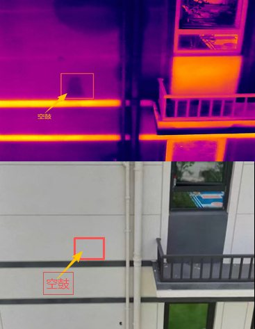
依托 BIM 协同平台实施“问题上报—下发整改—复查销项”完整闭环，问题直接关联构件下发整改任务；情况严重的由 AI 辅助生成工程暂停令，经总监理工程师签发下达。质量验收按检验批绑定构件成套归档，实测实量数据与模型自动比对、超偏差自动预警。
质量安全全过程资料依托 BIM 模型自动成套归档：检查记录、整改资料、隐蔽工程影像、验收记录全部绑定对应构件三维点位，操作永久留痕、精准溯源；质量问题可追溯到具体构件、具体时间、具体责任方，为质量终身责任制提供完整证据链。
数智化能力落地为可复制的专项方案，已在重点项目全模块运行。
以 ECMS 为管理中枢、易模通为 BIM 底座，两大平台能力互补；以管理驾驶舱实现经营、财务、项目多维数据一屏统管，以流程引擎实现待办、审批全流程追踪。
BIM 源头预控、危大工程清单化、AI 方案审查；空天地立体感知、AI 隐患识别分级告警；隐患全流程线上闭环，档案终身绑定追溯。
以 BIM 模型为数据载体，计划进度挂接模型、智能设备实时采集进展、AI 自动比对计划与实际并预警；无人机多期航拍量化工序完成比例，虚拟建造预演施工进程。
贯通“估算—概算—合同—动态造价—变更—结算”全链条；三重工程量智能交叉校验严控造价虚高，AI 质控开展量价费三维矩阵检测，进度款支付比例与质保金预留比例自动校验。
将监理资料“形成—审批—归档—调阅”全链条搬到线上：标准化监理电子表单与工程建设资料电子规范表单双体系支撑，档案按构件自动成套归档，实现“同步形成、规范成套、随时调阅、终身可溯”。
以 RTK 智能无人机为核心，AI 视频监控、智能穿戴、3D 扫描仪、智能检测设备协同组网，构建“空中—地面—结构”立体感知网络，隐患自动识别、巡检全程留痕、进度量化比对。
数智化体系全面应用以来，经营与项目管理效能显著提升。
企业层面：降本控险增效，全流程风险自动预警，规避工程款超付、安全事故、投标废标、资质过期等经营损失，形成区别于传统咨询企业的数字化服务能力，支撑跨区域规模化业务拓展。
项目层面：BIM 前置消除设计错漏，隐蔽工程影像永久留存、质量全程可追溯；立体智能设备 24 小时识别违规、高危区域无人巡检，大幅降低坍塌、高空坠落等事故风险；全过程资料依托模型自动成套归档，符合数字化竣工备案标准。
行业层面：打造泰安市全过程工程咨询数字化标杆与可复制落地模式；全流程无纸化、无人机替代外业通勤，践行绿色低碳建造；医院、学校、安置房等民生项目实现 24 小时数字化动态监管。
按“试点示范—全域推广—深度融合”三步走持续推进。
完成机房升级与平台本地化适配，建成造价指标库、规范知识库，完成智能设备采购调试，选取市级重点民生项目全模块试点运行，开展智慧工地星级评价准备并申报数智化转型试点企业与示范场景。
全部在建项目实现 ECMS、易模通全覆盖常态化应用，持续沉淀项目数字资产库，统一数字化作业标准，将试点成熟模式复制推广。
完成前端感知设备与数字中台全链路互通，完善全部 AI 应用场景，实现与市级智慧工地监管平台数据实时归集对接，形成可复制、可对外输出的全过程咨询数智化示范方案。

微信公众号